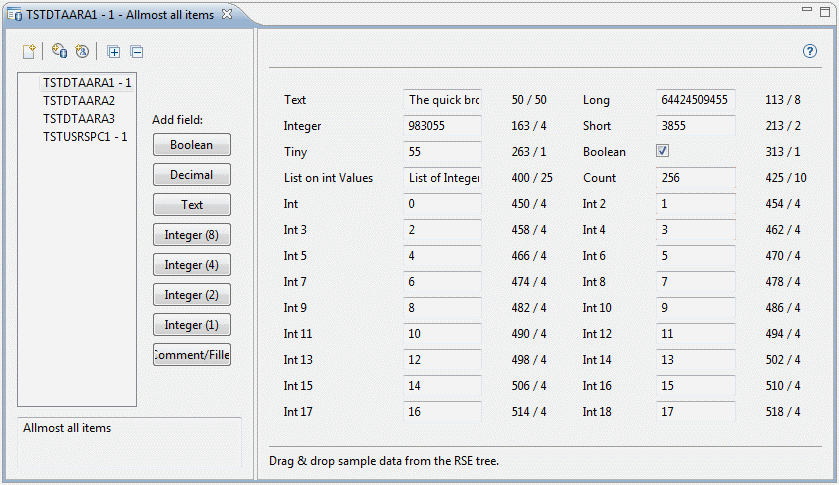
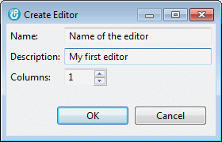
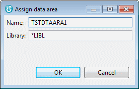

When you start the designer for the first time, the left panel is empty. So the first thing you may want to do is creating a new editor:
| Create Editor |

The number of columns spinner specifies the number of columns your editor will have. The example above shows a 2-column editors with numerous fields.
Clicking the OK button creates the editor. The new editor is loaded into the right area and the Add Field buttons are enabled.
Now it is up to you to add the fields you need to the area. For each field you need to specify a label and the offset of the data in the data space object.
| Remember: A data space object is a data area or a user space. |
Example of a 'Text' Field:
Notice: Some fields may require additional information, such as length or fraction.

In order to verify your work, you can drag & drop the data space object, you create the editor for, from the RSE tree into the designer. The current values show up immediately provided you created the fields properly:

The data displayed here come from the TSTDTAARA1 data area that you can find in your iSphere product library. Maybe that you need to "compile" it from source member ISPHERE/QDTAARASRC.TSTDTAARA1:
| CRTCLPGM PGM(QTEMP/TSTDTAARA1) SRCFILE(ISPHERE/QDTAARASRC) SRCMBR(TSTDTAARA1) |
| CALL PGM(QTEMP/TSTDTAARA1) PARM('ISPHERE' 'TSTDTAARA1') |
In order to complete your work, you need to assign the data space objects, you create the editor for, to the editor.
| Assign Data Area | |
| Assign User Space |

Now the iSphere Data Space Monitor automatically picks up the editor, when you select the iSphere Data Area Monitor option from the RSE tree.
See: iSphere Data Space Monitor
Comment/Filler fields can be used to add comments, separators or just blank lines or areas to the dialog:

For comments, just enter the comment you want to be displayed on the screen. The following special values are used to create a horizontal separator or a blank area:
| *SEPARATOR | - | Creates a horizontal separator |
| *NONE | - | Creates a blank area |
The following example shows a more complex editor with a separator below "List of Integer Values":

It is possible to assign a given data space object to one or more editors. That is useful, in case you want to see just a subset of the data of the object. For example a data space might store a huge amount of data. But when you work on one task you may need to see other data than when working on another task. In this case just create as may editors as you like and select the right one when starting the monitor.
The editors that you create with the designer are stored in directory:
| [workspace]/.metadata/.plugins/biz.isphere.core/dataSpaceEditors |